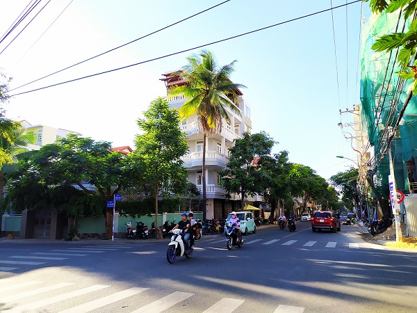
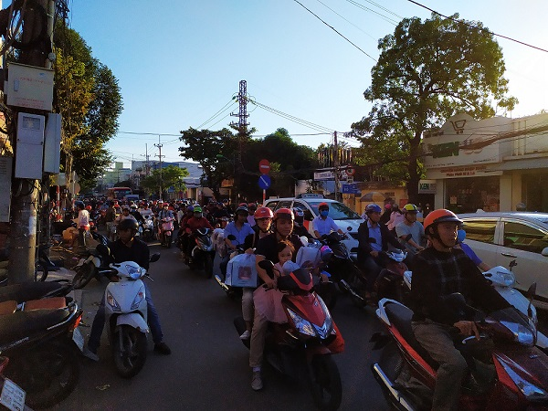
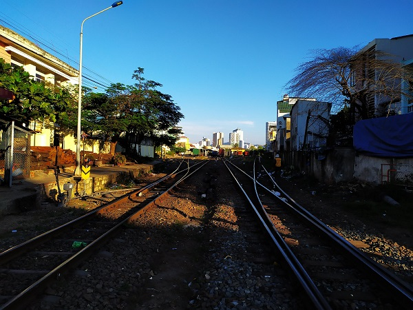
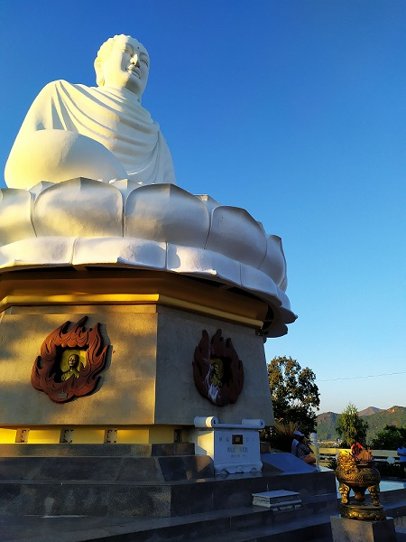
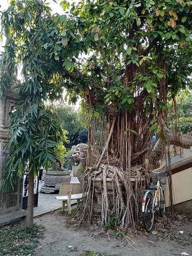
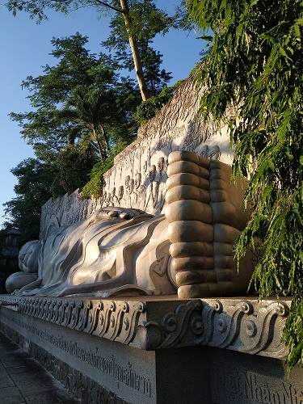
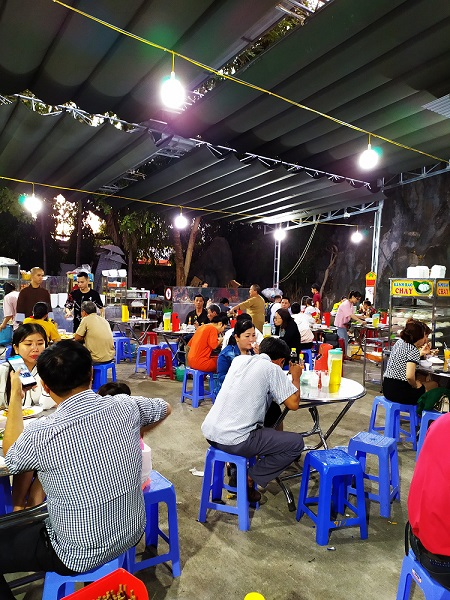
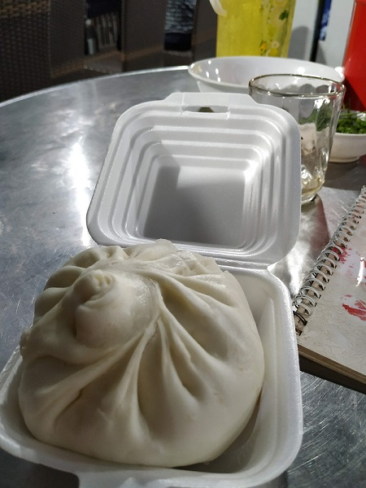
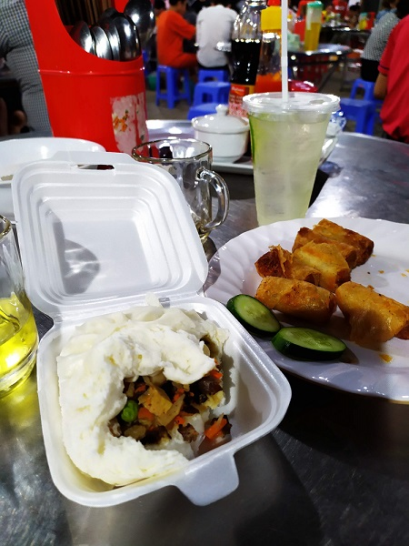

The breakfast time was from 6 am to 10 am at our hotel, so every day we had to wake up with healp of alarm clock. I think next time we should try to go abroad without breakfast at a hotel, of course it depends on a country. The best option to rent an apartment of course.
The breakfasts were good. Some times I tried something special, like crocodile meat or Kimchi.
After dinner we decided to go to pagoda Long Sơn. The distance isn't long, only about 3 km frome our hotel, but a lot of mopeds and absence of organised traffic made our trip much longer. Usually, people get there by bus. There were some districts looked like slumbs, I didn't feel safe there. Moreover there weren't any sidewalks, sometimes we made our way through mopeds with difficulty.



The pagoda isn't big but cosy. We saw two statues of Buddha, and watched beautiful sunset there at a hill. Lots of trees make this place calm and beautiful, like in jungle.



There was a cafe at the entrance to the pagoda, one of waitress was a monk. I was ashamed to make a picture of him. There we tried another Vietnamese food - steamed loaf Bánh bao.
Because of a sunset we couldn't stay there for a long time, so we walk toward to the hotel, of course by foot. And, as usuall, the way forward to the pagoda and back was more memorable than the pagoda itself. There were too many differences in our culture and the way of life. The number of moped on roads were crazy, it was like a endless river of mopeds. Each place where seafood were sold stopped us for some time, these places were everywhere. We stared and made photos of food we didn't see before.



Summaries:
1 – Don't even think to go to the pagoda by foot.